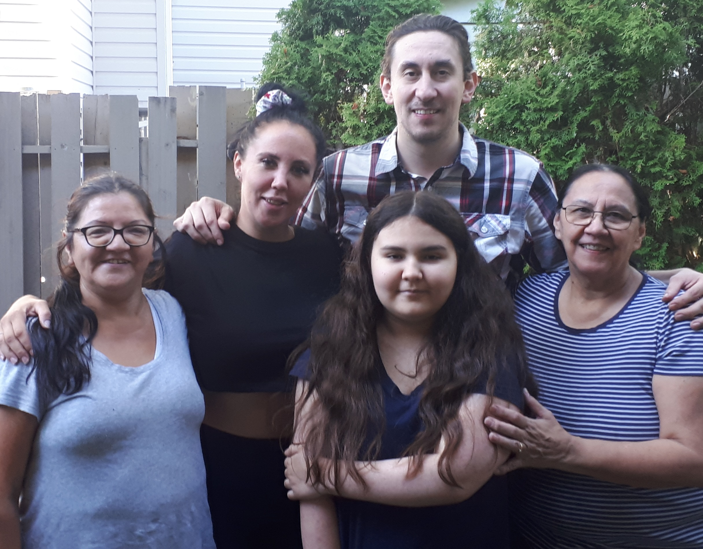

Traditional Flag of the Tshimshian Village Lax Kwalaams
The Tsimshian Peoples are an Indiginous peoples traditionally from the northeast of British Columbia. The Tsimshian people consist of approximately 10,000 members of seven First Nations (including the Kitselas, Kitsumkalum, and the "Allied Tribes" of the Lax Kw'Alaams; the Metlakatla, Kitkatla, Gitga'at at Hartley Bay, and Kitasoo at Klemtu). The Tsimshian are one of the largest First Nations peoples in northwest British Columbia.
I am Steven Paine and I am part of the Gitxsan. I was born in 1987 in Victoria General Hospital, and I have spent my entire life Living on Vancouver Island.
